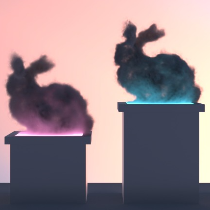

Gabor Fields: Orientation-Selective Level-of-Detail for Volume Rendering
Jorge Condor*, Nicolai Hermann*, Ata Yurtsever, Piotr Didyk
ACM Transactions on Graphics (to be presented at SIGGRAPH 2026)
Project Page Paper
Jorge Condor*, Nicolai Hermann*, Ata Yurtsever, Piotr Didyk
ACM Transactions on Graphics (to be presented at SIGGRAPH 2026)
Project Page Paper
Gabor Fields introduce a novel volume representation that supports continuous frequency filtering without extra memory overhead. By selectively pruning primitives and stochastically sampling frequencies and orientations, the method improves rendering performance, reduces aliasing, and enables efficient applications such as procedural cloud rendering.